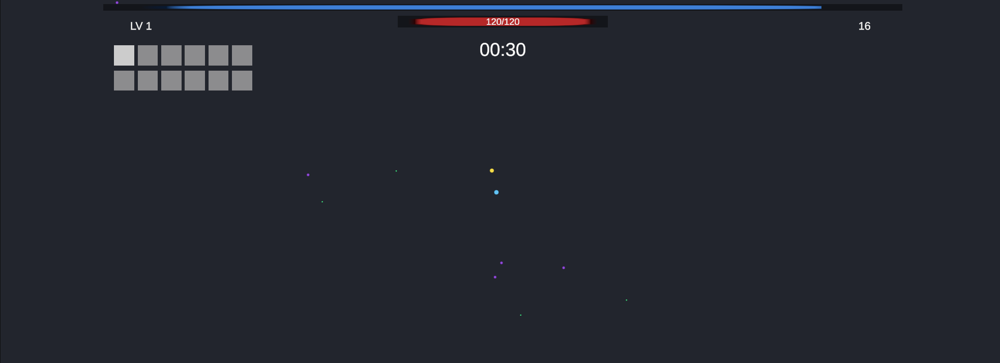
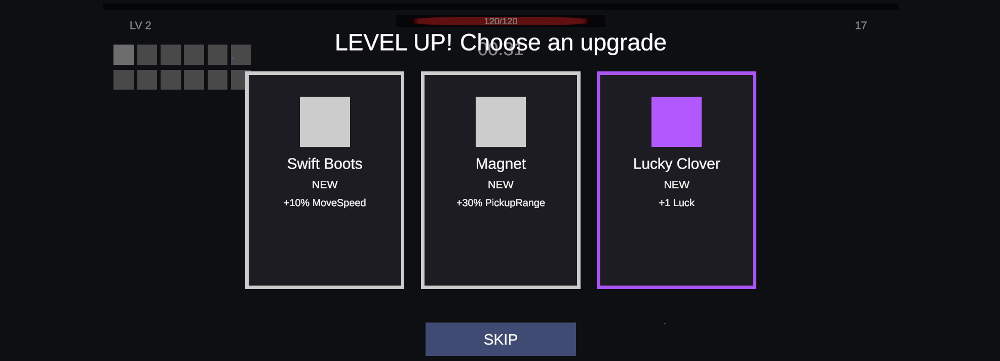

🛡️ Horde Survival Template
A complete Vampire Survivors / Brotato–style roguelike framework: thousands of pooled enemies, data-driven weapons and upgrades, weighted level-up loop, FSM enemies, difficulty pacing, save system and event-driven UI. 100% C# source, zero art dependencies.


Core Features
- Weapons & Upgrades Database: SO weapons with per-tier stats and swappable Weapon Behaviours (projectile fan, area aura, add your own in one file); passive items with per-tier modifiers.
- Weighted Level-Up Choices: pauses play, rolls un-maxed upgrades by Common / Rare / Epic / Legendary weights plus Luck, queues multiple level-ups.
- Difficulty Director: spawn-rate, burst-size and enemy-cap curves over time; enemy roster unlocks by minute; victory timer.
- AI Finite State Machine: reusable
BaseState/StateMachine/AIControllerwith Idle, Chase, Attack; custom states drop in. - Combat Pipeline: armor, crits, knockback, i-frames, piercing projectiles, pooled floating damage numbers.
- Save / Load: JSON via
ISaveable, obfuscation, atomic writes, automatic backup, corruption recovery. - UI Framework: screens driven purely by game-state events: menu, HUD, pause, level-up cards, game over / victory.
- One-click Demo Builder: generates layers, data assets, prefabs, player, spawner and UI from a menu item.
Architecture Highlights
Object Pooling
PoolManager → ObjectPool (Stack-based, O(1)) → PooledObject with cached IPoolable hooks. No Instantiate/Destroy during play.Entity RegistryFlat
EnemyRegistry with O(1) swap-remove; nearest / radius queries without Physics2D.DecouplingTyped static
GameEvents bus + ScriptableObject event channels. UI subscribes; nothing polls in Update().Data vs State
ItemData (static SO) ⇄ ItemInstance (runtime tier, cooldown, stats). Same split for enemies and player.Stat Pipeline
(base + Σflat) × (1 + Σ%add) × Π(1 + %mult), cached per stat, modifiers removable by source.Game FlowAbstract
GameManagerBase state machine controlling timeScale; concrete manager adds run stats and scene loading.CompatibilityLegacy Input Manager or Input System via
#if; Unity 6 API differences guarded; asmdefs tolerate missing optional packages.VerificationBatch-mode compile on Unity 6000.6 (0 warnings) + automated PlayMode smoke test covering spawning, kills, level-ups, pause and game-over.
60commented C# scripts
0 BGC alloc in steady state
12decoupled systems
0third-party dependencies
Package layout
Scripts/
├── Core/ GameState · GameEvents · GameManagerBase · HordeGameManager · Events/
├── Pooling/ PoolManager · ObjectPool · PooledObject · IPoolable
├── Stats/ StatType · StatModifier · StatSheet
├── Data/ PlayerStatsData · ItemData · WeaponData · PassiveItemData · EnemyData · DifficultyData · UpgradeDatabase
├── Inventory/ ItemInstance · PlayerInventory
├── Combat/ Health · Projectile · DamagePopup · WeaponController · WeaponBehavior · Behaviors/
├── Player/ PlayerCharacter · PlayerController · InputReader · ExperienceGem · CameraFollow
├── Enemies/ EnemyController · EnemyRegistry · EnemySpawner · GameTimer
├── AI/ BaseState · StateMachine · AIController · States/
├── Systems/ LevelUpChoiceSystem
├── Save/ ISaveable · SaveManager · MetaProgression
└── UI/ UIManager · UIView · Views/